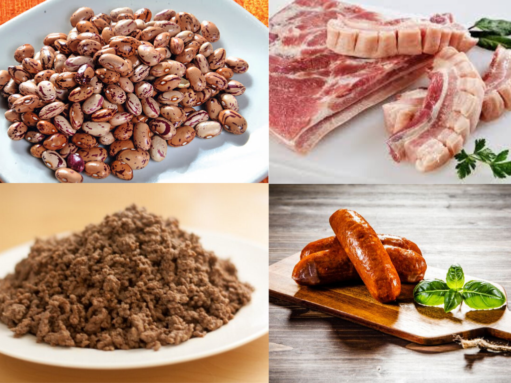
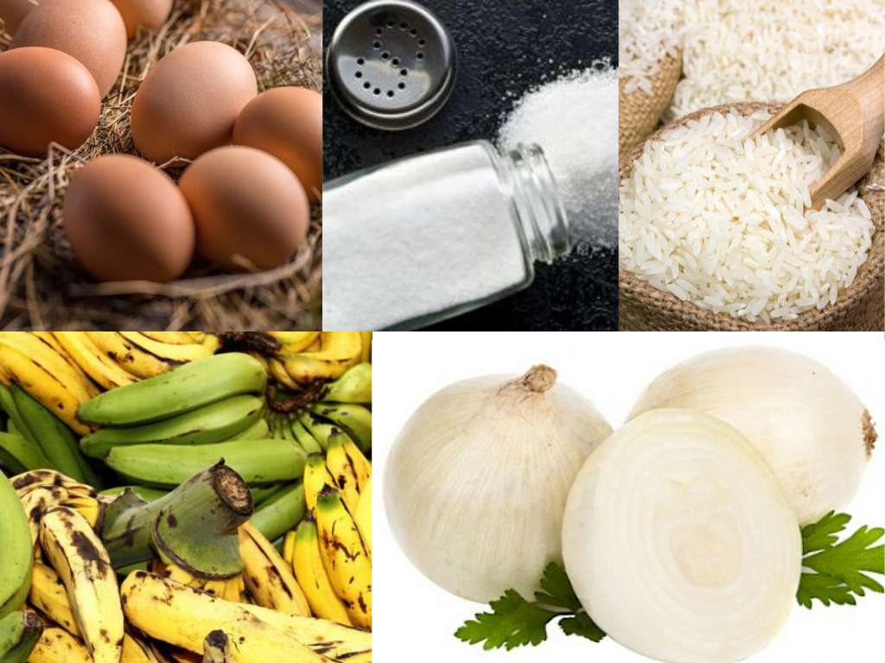
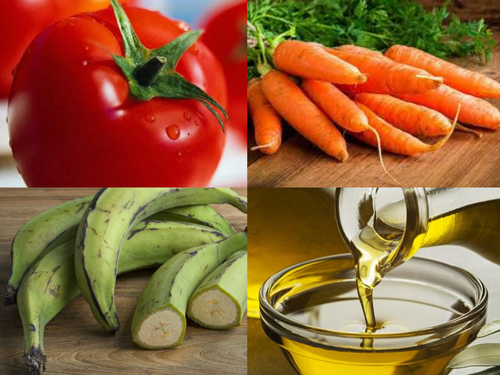

¿Qué ingredientes se necesitan para hacer una bandeja paisa para 6 personas?

● 6 huevos
● 1 libra de arroz
● 3 Plátanos maduros
● 4 cebollas grandes
● Sal al gusto

● 4 tomates
● 1 zanahoria mediana
● Medio plátano verde
● Aceite
Preparacion y Exito de la bandeja

Para que tus fríjoles sean más fáciles de cocinar, debes ponerlos a remojar en un recipiente con agua. Déjalos toda la noche para que estén más blandos a la hora de ponerlos a cocinar.

Prepara el hogao picando finamente las cebollas y los tomates. En una sartén con un poco de mantequilla y ajo al gusto, ponlos a sofreír durante diez minutos.

Para la cocción de los fríjoles utiliza la olla exprés, esto te ahorrará un poco de tiempo. Agregar y cubrir con agua y échales la mitad del hogao, medio plátano verde y la zanahoria mediana partida en trozos. Déjalos pitar aproximadamente por media hora.Después que hayan pitado, sácales la zanahoria, el plátano y una taza de agua y licuar. Agrega esta mezcla a los fríjoles nuevamente y ponlos a fuego medio –bajo a espesar.